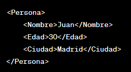

Maquetación de la Interfaz gráfica en XML - Android.
Un archivo en XML (eXtensible Markup Language) es un lenguaje de marcado que se utiliza para almacenar y transportar datos de manera estructurada y legible tanto por humanos como por maquinas. XML sigue un formato similar a HTML, pero a diferencia de HTML, que se utiliza principalmente para presentar datos en la web, XML se centra en describir datos y estructura. Algunas características clave de XML incluyen:
Estructura Jerárquica: los documentos en XML están organizados en una estructura jerárquica de elementos. Cada atributo puede contener atributos y/o contenido.
Tags (Etiquetas): Los elementos XML se definen mediante tags. Un tag de apertura (por ejemplo: '') indica el comienzo de un elemento, y un tag de cierre (por ejemplo: '') indica el final del mismo. El contenido del elemento se encuentra entre los tags de apertura y cierre.
Atributos: Los elementos pueden tener atributos adicionales que proporcionan información adicional sobre el elemento. Los atributos se colocan dentro del tag de apertura.
Documentos Bien Formados: Un documento XML debe seguir ciertas reglas para ser considerado "bien formado". Esto incluye tener un único elemento raíz y asegurar que los tags se abran y cierren correctamente.
Ejemplo simple de un documento XML:

En el contexto de desarrollo de aplicaciones Android, XML se utiliza comúnmente para describir la interfaz de usuario en archivos de diseño, como en el ejemplo anterior. Tambien se utiliza para definir recursos, configuraciones, y otros aspectos de la aplicación. Además, Android utiliza XML para definir la estructura de los archivos de manifiesto, donde se especifican detalles sobre la apliación, como actividades, permisos y más.
Identificación de Layouts para Android.
En el desarrollo de aplicaciones Android, los "Layouts" son componentes clave que determinan la estructura y organización de la interfaz de usuario. Estos son algunos ejemplos:
LinearLayout: Organiza los elementos en una fila o columna unica.
RelativeLayout: Permite posicionar los elementos deacuerdo con las relaciones entre ellos.
Contraintlayout: Ofrece un diseño más flexible al permitir establecer restricciones entre elementos.
Concepto de Responsividad.
En el contexto de desarrollo Android, la responsividad se refiere a la capacidad de la interfaz de usuario para adaptarse a diferentes tamaños de pantalla y orientaciones. Para lograr esto, se utilizan unidades de medida 'dp' (Pixeles de densidad independiente) en lugar de pixeles absolutos, y se implementan layouts responsivos como Contraintlayout.